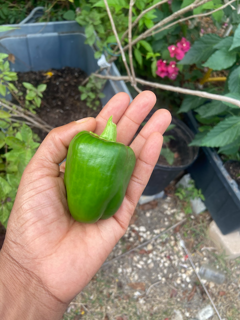

Gardening Supplies
These are supplies you will need to start your perfect Caribbean Garden. Start with the basics and later you can add fancier and more expensive tools.
- hand tools
- pots of various sizes
- starter pots and trays
- fertilizer
- Neem oil
- a water source close to your garden area
Eco-Friendly Gardening
The ecosystem of the islands is fragile. It's recommended that you use some eco-friendly strategies to ensure that your garden will flourish and provide food for years to come. Use natural fertilizers. Wash containers with vinegar and water and let dry in the sun. Reuse kitchen containers such as egg cartons instead of buying containers. This will save money and contribute to a cleaner environment.
Fun Facts
Here are some fun facts about gardening in the VI.
- There are local markets where you can get plan slips and talk to expert gardeners.
- Seasons are known by the fruits they bear. Mango Season. Soursop season, and so on
- Water catchments are a must if you want to keep your garden alive.
Chat with an Expert Gardener
To chat with an expert gardener call